Nossos Equipamentos
O laboratório conta com um diverso instrumental para a realização de análises espectroscópicas envolvendo Raman e IR. Os principais componentes são descritos a seguir.
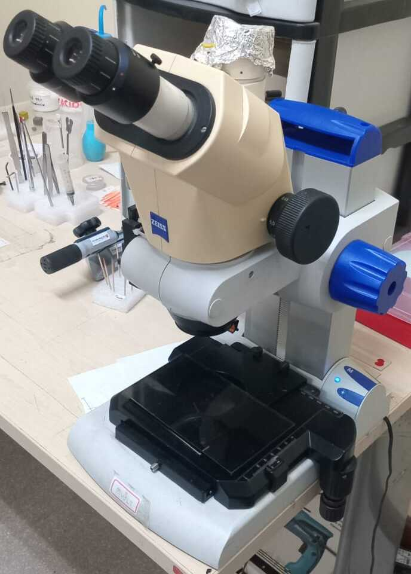
Estereomicroscópio Zeiss Stemi 2000-C
Utiliza duas trajetórias ópticas independentes e inclinadas, gerando imagens tridimensionais com excelente percepção de profundidade e fidelidade de cores. Seu fator de zoom 7,7:1 permite uma transição contínua e suave de ampliações, indo de visões panorâmicas de campo amplo até detalhes minuciosos com um sistema parfocal. Também possui um tubo trinocular que divide a luz para que o usuário possa acoplar câmeras digitais e capturar fotos ou vídeos enquanto realiza a observação visual. Oferece amplo espaço livre entre a lente objetiva e a amostra, facilitando a manipulação de ferramentas, pinças ou agulhas diretamente sob o microscópio.
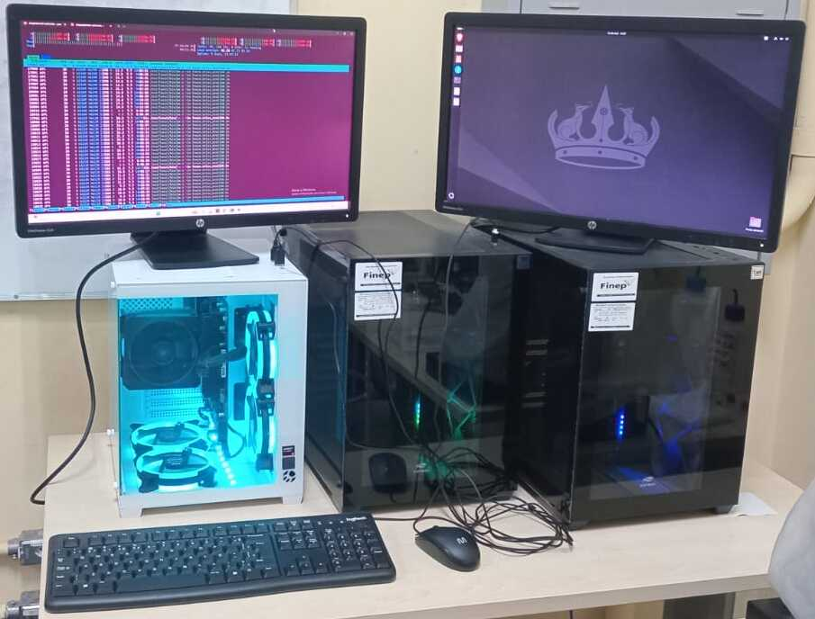
Monitores HP EliteDisplay E231 e Estações de Trabalho
- Estação de trabalho CETECH (preta):
- Gabinete: Desktop tipo Torre (Tower).
- Processador: AMD Ryzen 5 (múltiplos núcleos com gráficos integrados Radeon).
- Equipamento de alto desempenho, destinado ao cálculo de propriedades ópticas, contando com proteção Nobreak.
- Estação de trabalho Bel Informática (branca):
- Gabinete: Desktop tipo Torre (Tower).
- Processador: AMD Ryzen 9 (alta performance).
- Equipamento de altíssimo desempenho voltado para o processamento de dados pesado e computação gráfica.
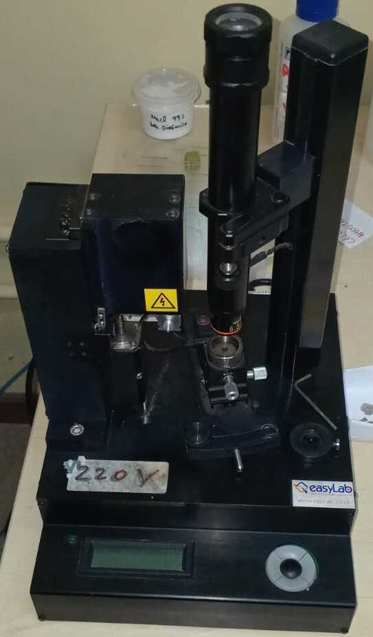
Microperfurador de Gaxetas por Eletroerosão Boehler microDriller
Sistema especializado de bancada projetado para microfuração, alinhamento óptico e microindentação de materiais submetidos a condições extremas. Equipado com um microscópio de alinhamento vertical e objetivas intercambiáveis. Possui chassi metálico robusto e coluna vertical estável que minimizam vibrações mecânicas durante procedimentos de microusinagem ou medição. Sua mesa de posicionamento com eixos ajustáveis manualmente por fusos de precisão possibilitam centralização milimétrica da amostra. Possui base digital integrada com display LCD para leitura de parâmetros, botões de comando rápidos e alimentação elétrica dedicada.
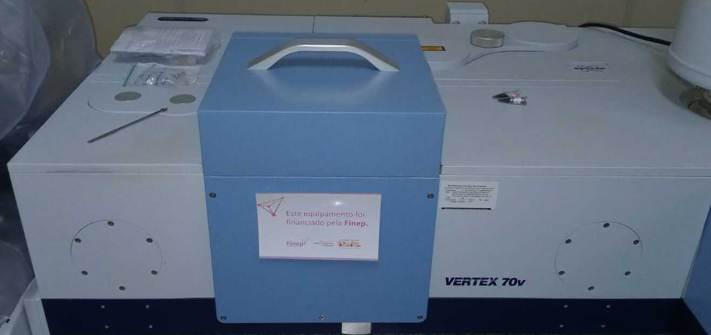
Espectrômetro de Infravermelho por Transformada de Fourier (FT-IR) Bruker VERTEX 70v
Plataforma avançada de nível de pesquisa, projetada para fornecer máxima sensibilidade e flexibilidade em análises moleculares complexas. Com um sistema óptico totalmente a vácuo, elimina-se a absorção e o mascaramento de bandas espectrais causadas por vapor de água e dióxido de carbono, possibilitando identificar traços e bandas espectrais extremamente fracas. Pode trabalhar desde o infravermelho distante até as faixas visível e ultravioleta. Suporta múltiplos divisores de feixe e detectores. É equipado com um interferômetro com alinhamento permanente que resiste a vibrações mecânicas e flutuações térmicas. Seus detectores utilizam um sistema de digitalização com conversores ADC de 24 bits de faixa dinâmica, o que resulta em espectros limpos, redução drástica do ruído eletrônico e precisão na escala de números de onda. Permite o acoplamento externo com microscópios infravermelhos para análises microscópicas de mapeamento de superfície.
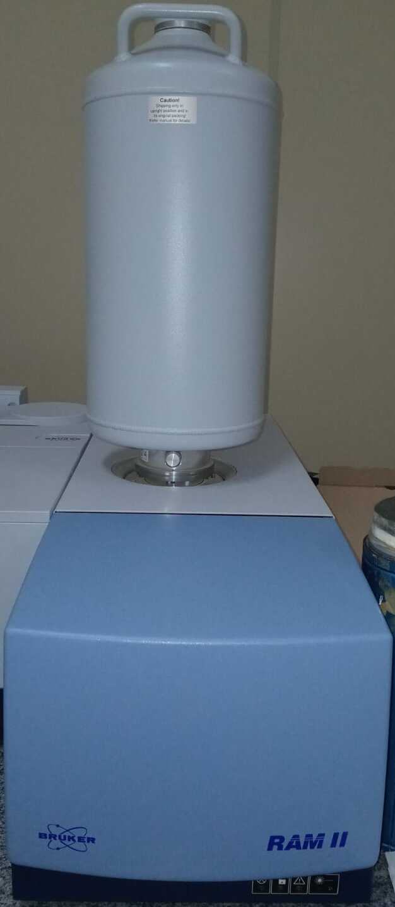
Módulo FT-Raman Bruker RAM II
Sistema de espectroscopia FT-Raman de alta performance, projetado para se integrar perfeitamente aos espectrômetros de pesquisa da linha FT-IR da Bruker. Ele expande a capacidade analítica do laboratório ao permitir medições Raman de alta sensibilidade com supressão de fluorescência. Sua configuração óptica permite: coleta de retroespalhamento que otimiza a captação do sinal Raman; flexibilidade para operar com dois sistemas de lasers ou detectores distintos; atenuação eficiente da linha de laser Rayleigh para maior clareza espectral; além de um detector de germânio de alta sensibilidade e baixo ruído, resfriado a nitrogénio líquido. Possui proteção rigorosa contra radiação laser por meio de travas e blindagens mecânicas automáticas. Possui um laser Nd:YAG (1064 nm), com excitação no infravermelho próximo que minimiza drasticamente a fluorescência de fundo na maioria das amostras orgânicas. Seu sistema de controle de posicionamento motorizado via software permite foco e mapeamento precisos. Possui suportes para cubetas, porta-sólidos, células de temperatura controlada e sistemas de microamostragem.
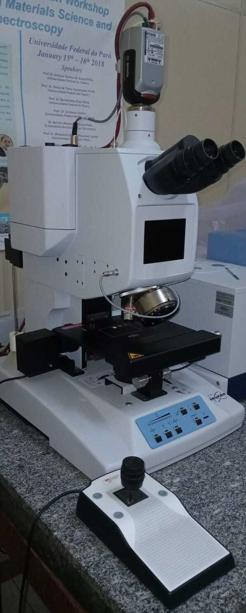
Microscópio FT-IR Bruker Hyperion
Projetado com um design modular, este equipamento se integra perfeitamente a espectrômetros de bancada da marca Bruker para fornecer análises moleculares estruturais de alta precisão em escala micrométrica. O equipamento opera com os três principais modos de aquisição espectral: transmissão, reflexão (especular/difusa) com ângulo de Incidência Rasante (GIR), e Refletância Total Atenuada (ATR). As fendas de mascaramento do feixe podem ser posicionadas individualmente nos planos de imagem conjugados, tanto antes quanto depois da amostra, garantindo o máximo de sinal e eliminando reflexos parasitas, permitindo uma resolução espacial limitada apenas pelo limite físico de difração da luz vermelha. Possui uma platina motorizada de alta precisão, o que possibilita mapeamento por ponto (Line/Grid Mapping) , onde o software move a platina automaticamente, coletando espectros ponto a ponto para criar um mapa de distribuição química da amostra. Possui: tela LCD acoplada diretamente à estrutura do equipamento para rápida visualização; oculares binoculares tradicionais combinadas com uma câmera CCD interna de alta qualidade; ferramentas ópticas complementares opcionais, como iluminadores de contraste de fase, polarizadores visíveis/IR e iluminação por fluorescência. Pode acomodar diferentes tipos de detectores refrigerados a nitrogênio líquido ou refrigerados termoeletricamente, cobrindo faixas que vão desde o infravermelho próximo até o infravermelho distante.
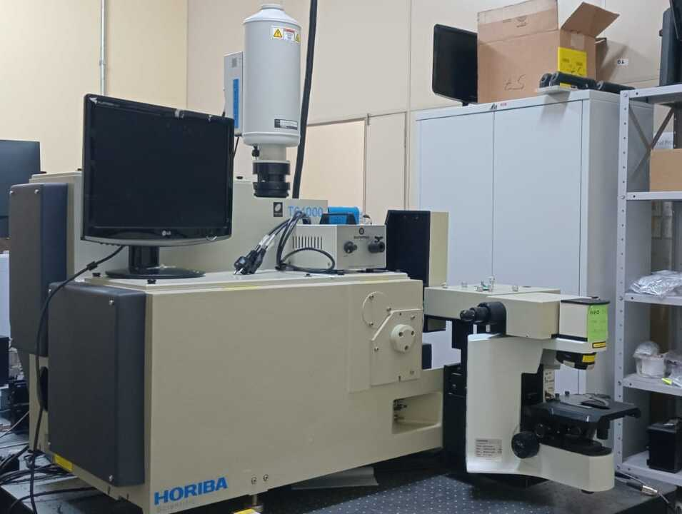
Espectrômetro Raman HORIBA T64000
Um dos sistemas de espectroscopia Raman mais avançados do mundo, projetado para oferecer o máximo desempenho em resolução óptica e rejeição de luz espalhada. Pode operar no modo triplo aditivo (para resolução ultra-alta) ou triplo subtrativo (atuando como um filtro de banda de altíssima eficiência para análise de frequências muito baixas). Permite medir sinais Raman extremamente próximos à linha do laser, ideal para estudar transições de fases, fônons e modos acústicos.
Possui redes de difração de alta precisão que garantem a separação detalhada de bandas espectrais muito próximas. Integra-se a microscópios ópticos de nível de pesquisa. Projetado para trabalhar com uma ampla gama de comprimentos de onda de excitação, desde o UV até o infravermelho próximo. Pode ser alternado entre os modos de monocromador simples, duplo ou triplo.
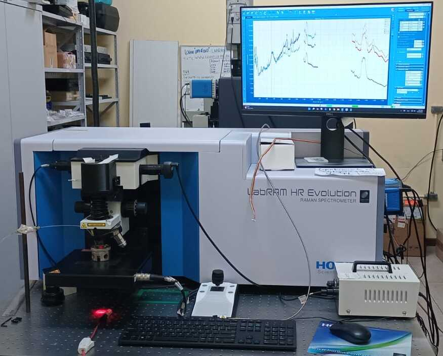
Horiba LabRAM HR Evolution
Sistema avançado de microespectroscopia Raman que combina alta resolução óptica com flexibilidade analítica. Equipado com um comprimento focal longo de 800 mm, o que permite separar picos espectrais muito próximos e analisar mudanças sutis na estrutura cristalina ou tensões de materiais. Excelente resolução espacial tridimensional, permitindo analisar amostras microscópicas ou fazer cortes ópticos em profundidade com alta precisão. Suporta múltiplos lasers de excitação (do UV ao infravermelho próximo).
A troca de componentes é totalmente automatizada via software. Conta com um microscópio óptico de pesquisa que facilita a visualização nítida da amostra e o posicionamento exato do feixe de laser sobre a área de interesse. Possui plataforma motorizada XYZ, que permite o deslocamento automatizado da amostra com precisão nanométrica.
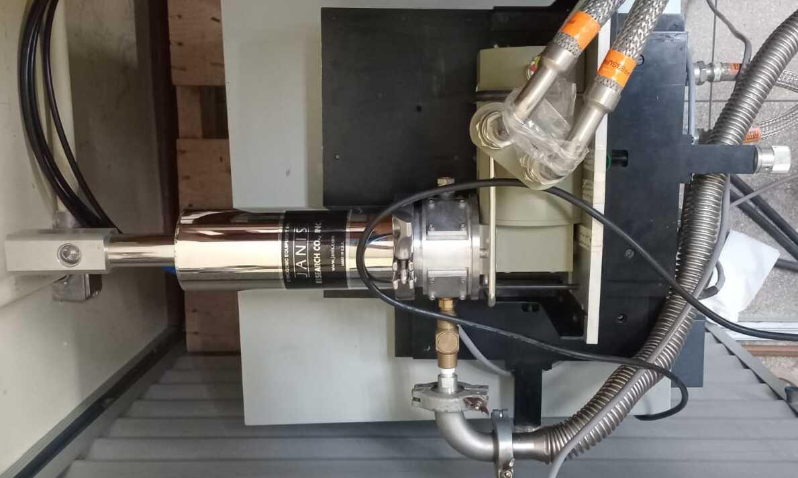
Criostato de Fluxo Contínuo
O cilindro metálico central abriga a câmara de amostra e as blindagens térmicas para conter o frio. Os tubos corrugados e isolados a vácuo servem para transportar fluidos criogênicos com o mínimo de perda térmica. Possui flanges padronizadas projetadas para manter o isolamento térmico ultra-alto por meio de alto vácuo na camisa externa. A estrutura preta (à direita na imagem) conta com trilhos e guias de alinhamento, essenciais para posicionar o equipamento com precisão em bancadas ópticas ou sistemas de espectroscopia.
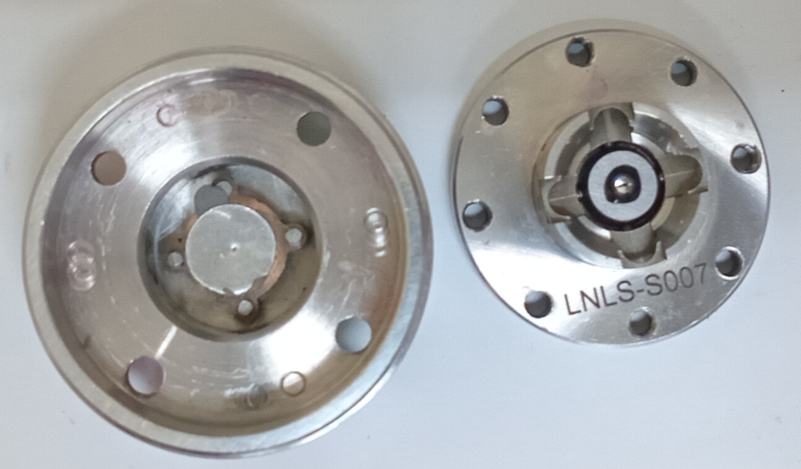
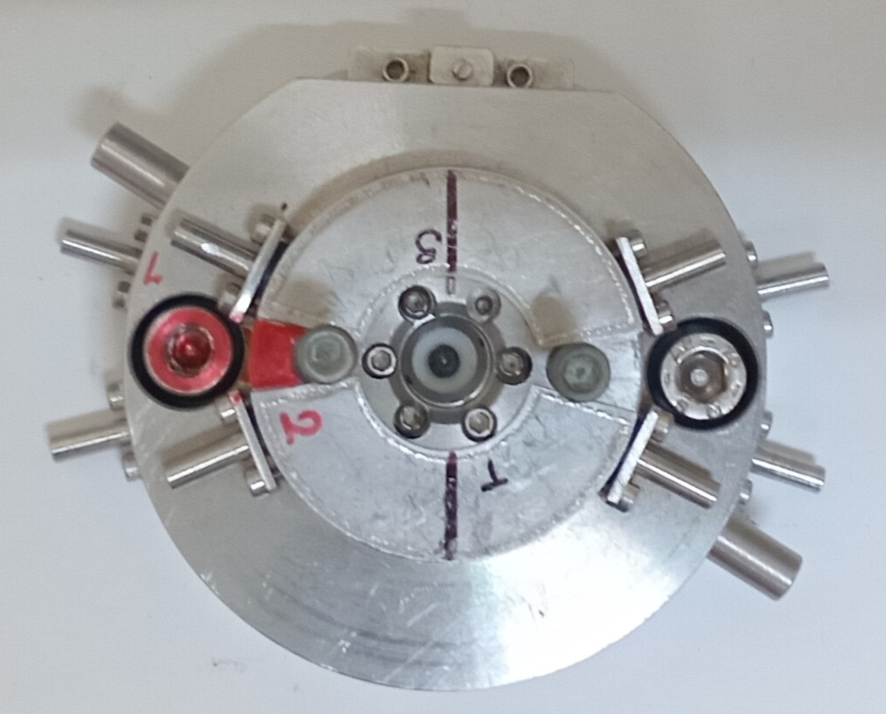
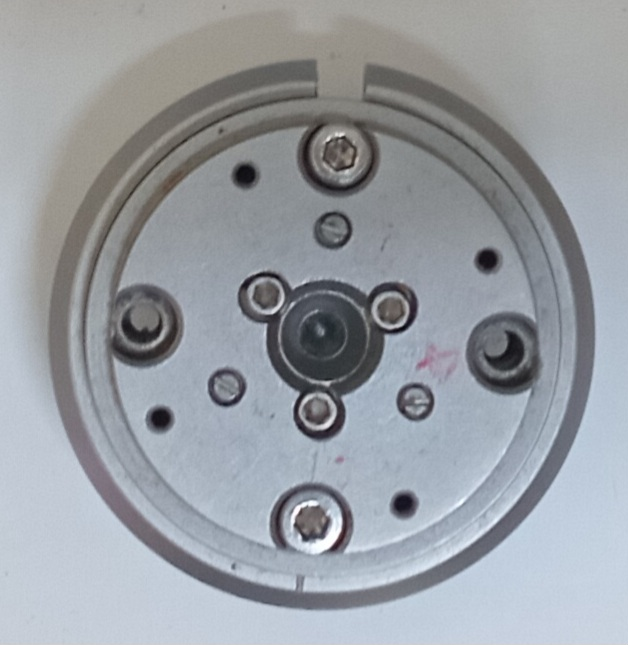
Células de Bigorna de Diamante (DACs)
Dispositivos mecânicos de alta precisão projetados para submeterem materiais a condições extremas de pressões estáticas. Os equipamentos utilizam dois diamantes lapidados com pontas planas posicionadas de forma perfeitamente opostas, e estes permitem a passagem de radiação, possibilitando analisar a amostra em tempo real sem abrir o dispositivo. O corpo das células são fabricados com ligas metálicas especiais que suportam variações extremas de temperatura, permitindo que as DACs sejam introduzidas em criostatos ou aquecidas por lasers para simular condições de alta pressão e alta temperatura simultaneamente.
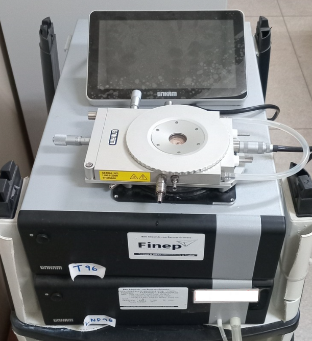
Estágio Térmico Linkam
Conjunto de três equipamentos integrados: o estágio térmico Linkam THMS600, o controlador de temperatura universal Linkam T96 e a bomba de nitrogênio líquido (LNP96) acoplada na base. Este sistema é uma das soluções de controle térmico mais utilizadas no mundo para caracterização microscópica e espectroscópica de materiais. Ele permite submeter amostras a variações extremas e precisas de temperatura diretamente sob a lente de um microscópio óptico, espectrômetro Raman ou equipamento de raios X.
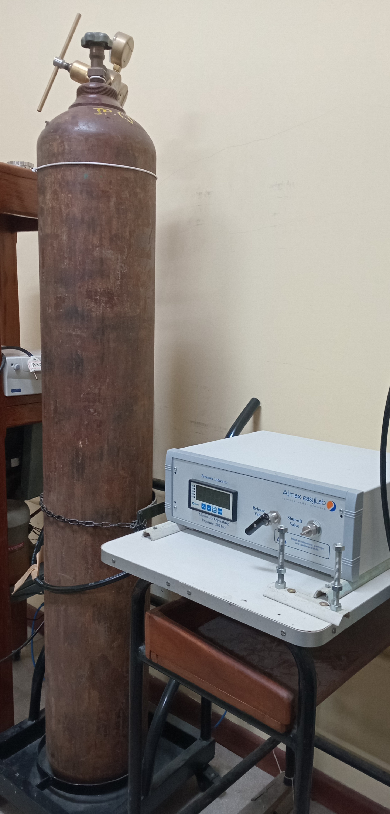
Sistema de Controle e Monitoramento de Alta Pressão Almax easyLab
Sistema modular de pressurização e controle pneumático, utilizado para gerenciar com precisão a introdução de gases em dispositivos experimentais, como as Células de Bigorna de Diamante (DACs). O controlador é alimentado diretamente por um cilindro de gás de alta pressão (geralmente contendo gases inertes como Argônio, Hélio ou Nitrogênio, que servem como meio de transmissão de pressão). O controlador Diacell GM possui um indicador digital de pressão (exibe a pressão atual da linha em tempo real, além de dispor de teclas de navegação e inserção para configurações de limites e parâmetros de leitura), uma válvula de alívio (permite a despressurização controlada ou a exaustão rápida de gás do circuito de forma segura) e uma válvula de bloqueio (atua como o registro principal do controlador, isolando completamente o fluxo de gás proveniente do cilindro em relação ao restante do arranjo experimental).
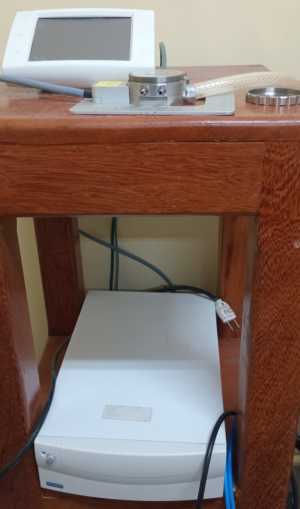
Sistema de Platina Térmica para Microscopia: Controlador de Temperatura Linkam TP94 e Platina Térmica de Alta Precisão
O sistema Linkam TP94 é projetado para o controle, monitoramento e modulação térmica em escala microscópica. Atua como uma interface microprocessada capaz de fornecer estabilidade térmica extrema para análises que exigem dinâmica de aquecimento e resfriamento em tempo real. Enquanto o controlador TP94 processa os comandos e gerencia a energia, a platina térmica acomoda a amostra diretamente sobre uma câmara selada ou placa de aquecimento uniforme. Para atingir temperaturas abaixo do nível ambiente, o sistema opera em conjunto com uma bomba de nitrogênio líquido. O equipamento é capaz de manter a amostra em uma temperatura fixa por tempo indeterminado, ideal para ensaios de degradação térmica prolongada ou cristalização lenta. Possui interface de comunicação para ser controlado remotamente via softwares laboratoriais acoplados a sistemas de captura de imagem.